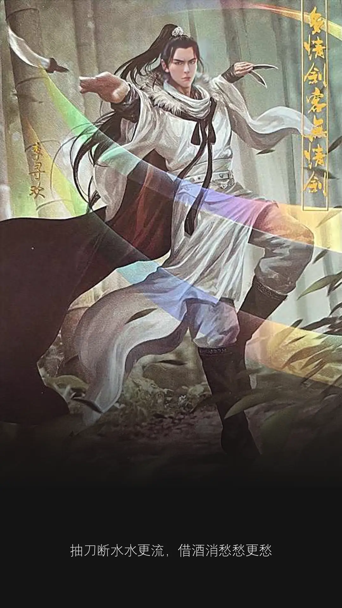

我也喜欢名牌。
我喜欢苹果。
平常会到 NSK 买几粒 Apple 怀念一下 Steve Jobs.
我喜欢刘德华。
从小立志跟黄牛抢最便宜的演唱会门票。
最近我还看中一只变脸 Labubu，心痒痒。
心痒痒是否就是一见钟情？
也难怪。
每次这里痒，那里痒。
不管了。
我要开始存钱！
一天一块。
十天后，刚好出粮，那时候是世界首富。
我就把它带回家，如果它还在。
有了仪式感，时间一分一秒，都是神圣与期待。
等待的过程中，它会让你觉得是否值得。
如果不是，那也就算了，当初只不过是一时冲动。
如果是，得到以后，或许就会更珍惜。是吗？
它不再是一只普通的 Labubu.
它是一只有故事、有生命、有回忆的 Labubu.
赋予即是富裕。
因为有你，在我的身边，我已经是，全世界，最有钱的人。
到了一个年纪，你还会相信永远吗？
明知道，当然还是要。
要什么？我问的是会不会哩。你会不会的噢？
会！我会相信永远。不止一个。一个怕不够，至少要两个。
Forever Forever? 你很贪心。贪心的人到后来什么都得不到，也抓不住。
就算 F4 变 F3，就算孝天会被杰伦阿信来取代，就算最后什么都没有，至少我贪过。
会不会是因为你贪，所以最后什么都没有。
我本来什么都没有，况且有的从来都不属于我。得到过当下，至少也算得到过。
你不会不甘心吗？
会！不去想她，就不会了。所以请告诉她，我不爱她。但别告诉她，我还想她。
好！等下我就转告她，有人还想她
明知道永远不存在，但我还是要 ... 选择相信。
阿信都五十了，你相信吗？
我永远永远相信音乐。
她的老师叫 Melody.
为什么叫 Melody?
Intern 自己也不知道。
常言道：
知彼知己者，百战不殆；不知彼而知己，一胜一负；不知彼，不知己，每战必殆。
所以，你还没输。
不能认输。
读下去，你就还有赢的机会。
听说 ...
在很久以前，也就是十年前，这个老师去过一趟普吉岛。
那时候，她看起来比现在年轻十岁。
那时候，RM100 等于 838 泰币。
那时候，她还没有一个英文名字。
那时候，她住在一间距离海边很靠近的旅馆。
那里有两个海边，毗邻在一起，各有各的名。
一个叫 Kata beach，一个叫 Karon beach.
从旅馆出来，再走一公里路，双脚就可以踩在如粉末般的沙滩。
途中，会经过一个邮政局。
就在这邮政局，她买了一张明信片，准备寄回给自己。
她写了一些文字，一些想对二十岁自己所说的内心话。
明信片底下，她放了一个陌生名字。
有一天，她回到家，望进信箱，信箱多了一张卡。
她很兴奋。
等了好久终于等到 ... 一张水喉佬的广告传单。
这张传单下足功夫，彩色质量绝不比明信片来得差。
她很失望。
故事的最后，还是不知道，为什么她叫 Melody？
我不是当事人，鬼知道。
鬼知道，你没有认输，还在读下去。
鬼知道，她住的那间旅馆，夜晚就算很累也不容易睡得着。
厕所洗脸盆那个水槽，会发出让人畏惧、抑郁、不安、害怕的水滴声，在空中回荡。
就像是一首凄凉的旋律，menderita tiada haluan，听进心里全身颤个不停。
听说 ...
又在很久以前，时间再往回十多年，有两个漂亮女人相约来到泰国。
一个叫 S 晶莹剔透，另一个叫 K 白里透红，别人都称她们为 SK2.
她们下榻于一间名为 The Melody 的旅馆。
旅馆里有个电视机，电视机旁有个录影带。
出于好奇心，双手终究忍不住，她们把录影带放进播放器。
电视立刻发出沙沙声，闪了几下，随后播出一个阴森画面。
看到这里，其中一个女人不见了。
恐慌之中的 K 赶快跑出旅馆。
眼前什么时候出现一口井？
Pertemuan yang tanpa diduga!
K 吓得不敢动，更不明白发生什么事。
这时候一只手从井口伸出来，是 S ... Sadako!
在面子书，刷到一个家庭煮父的视频。
他参加小儿子的小学毕业典礼，过程拍得很真实，仪式感满满。
其中一段，看着看着，怎么突然有洋葱？
因为他本身就是家庭煮父，随身携带大蒜洋葱。
但是没有人告诉我，当把视频看下去，先要准备好纸巾。
不怕，男生拥有最多的就是纸巾。
现在的小学毕业典礼，和自己以前的，已经不一样。
里头有一个环节，毕业生需要向父母敬茶。
礼堂背景音乐就会播放那种，还没开始切洋葱，就已经切到手指的那些歌。
痛！
但是一想到，自己做的菜，孩子喜欢吃，再露出那开心满足的笑容和表情。
这点痛，又算什么？
这时候，一名男老师就会很感性的念出一些台词：
同学们，
现在请你站在父母的面前，先抬头看看父母的脸。
你会看到那些疲惫的纹路，苍老的痕迹，岁月的刻印。
他们之所以如此，并不是因为时间走得快，而是因为他们把最好的都给了你。
现在请你把茶杯端起来。
你双手端着的这杯茶，不是普通的茶。
而是看你什么时候娶个媳妇来，现在只是个彩排。
十二岁以后，是时候闯荡江湖。
以后找到老婆，记得把她带回家，再敬父母一杯媳妇茶。
现在这杯已经喝下去了，就是一个承诺。
到我有话想对弟弟说：
还是那句：
Education didn't end with graduation, it started.
比上一句，更重要的，是接下来这一句：
弟弟，去找媳妇去！快！
放工前，会议室传来一股难闻的味道。
是漆味，是那种便宜的漆味。
它无影又无踪，味道却比榴莲浓，比大象重。
重到一闻头就疼，一呼身体缺了魂，再吸下笔如有神。
在呼吸之间，突然明白了，那些创作者为何要喝酒吸毒。
因为当下被放空的感觉，你不再是人，就没有了人的枷锁。
身体被释放，灵感随之而来，就可以尽情天马行空。
水可以载舟，亦可以煮粥，一念天堂，一念地狱。
只要差一点点，再差一点点，你不是 yoohoo! 就是呜呼。
正如李白，有三大爱好：一作诗，二喝酒，三喝酒时作诗。
当然也少不了隔壁老黄：一哭，二闹，三上悠亚。
隔壁老黄在装修，同事说那是甲醛。
我心里啧啧称奇：来者何人？
这同事闯荡江湖多年，阅历丰富，饱经世故，必定不是普通人。
甲醛 — 一个多么难念的词。
不懂的人不懂，半懂的人还是不懂。
当今武林，懂得其用意，又有能力念出来的，实在为数不多。
平时看到这词汇，自己也懒得查字典。
何况这种化学名称，十足像蟑螂演变出来的异类，碰见即让人起鸡皮疙瘩。
可以漠视就不要费事，能闪则闪，有多远走多远，避而远之。
最好不要再相遇，你我缘分就到此。
无奈 ...
天长地久有时尽，此恨绵绵无绝期。
蟑螂杀不死，也灭不尽，只好静静。
直到有关同事，把甲醛两字溜出口。
莫非 ...
她是油漆高手，越高的手，越神鬼莫测。
我是油漆新手，越低的手，越束手无策。
好了够了，吸 gum 吸多了，开始语无伦次。
故事可以乱编，但是漆不能乱油。
油条可以乱吃，但是漆还是不能乱油。
装修家，翻新过程，十多年才那么一次。
油漆就选比较好的 odourless 牌子，不要省那百多令吉。
有些费用省不得，只要一省，李白在黄泉路上等着你。
谁又是最后的凶手？到时已经回不了头。

有一只老鼠，在我房间的天花板，跑来跑去。
我房间的灯也就跟着闪一下，亮一下，熄一下。
有一次熄了一整天，还以为开不到了。
我很烦，所以去睡觉。
谁知第二天自己又亮回来。
人生就像打炮，打你的头，灯泡。
你永远不知道，天花板的老鼠，什么时候爽爽跑来跑去。
还立志参加什么跨栏项目，梦想成为下一个刘翔。
然后脚短跨不过那条天线。
你的灯就永远，就永远 ...
说到这里有点感触、哽咽 ... 就亮不起来。
以前是一只大象出现在我房间。
然后我的吉他就断了两截。
现在竟然出现老鼠。
他们说，只要有老鼠，就没有大象，有大象就没有老鼠。
两者只能选一。
我看戏看太多，就跟他们说，我不是小孩子，我两个都要。
现在 ...
屋漏偏逢连夜雨，赔了夫人又折兵。
好像不是这么用的，但我喜欢。
凡是我喜欢的，你管不着。
他人笑我太疯癫，我笑他人看不穿。
我的灯还亮着。
老鼠也还在。
孤男寡女共处一室。
谁是男谁是女不要紧。
我们皆大欢喜。
原来有些人，就算你是第一个认识他，
也和他经历了很长的一段旅程，最后的归宿却不一定是他。
只能说你很了解他，但他始终不属于你。
因为人会因为眼前所发生的事情，
自己的感觉也跟着不停在改变。
当初谁又晓得，未来走下去的路，竟不是对方。
后来在彼此生命中，
出现了那个爱我们比爱自己更深的人。
爱我的人和我爱的人，我们选择了爱我的人。
选择一个爱你的人，永远都比较容易。
当你不再犹豫、不再只想要你爱的，
这不是一种妥协，而是幸福有很多种。
往前一步是黄昏，退后一步是人生。
在另一个结局，不一样的幸福，我们还是可以很幸福。
《绝代双骄》快看完了。
常言道：天下武功，唯快不破。
一百万字数的武侠小说。
来无影，去无踪。
读着、读着 ...
突然觉得很短，短到随时可以结束。
你把我带进了故事，又要我从故事中抽离。
在里面认识的一大堆角色，怎么能说忘就忘。
我做不到，要时间，才能回到现实。
暂时就让我继续沉迷在文字的虚拟世界。
记得很久以前，我在 LRT ticket machine 附近吹着风扇。
有一个女生很急着要买票，但是那机器不领情。
越看她着急，机器似乎越开心。
人在江湖，难免会想为那些弱小女子拔刀相助。
我看不过眼，就走过去。
“这机器不好，他不会是个好男人，也不会是个好情人，为什么不试一下其它机器呢？“
她点头。
走了去其它机器，没想到十个机器七个傻，八个呆，九个坏，还有一个 ...
我始终不知道是好是坏。
还没尝试到最后，那女的放弃了。
带着悲愤绝望怨恨的眼神，决定搭 Grab 去。
从此以后，她看到 LRT 就说 LRT 像男人，没有一个是好东西！
她肯定是刚被男人伤害。
现在连机器都要欺负她，可怜的女人。
今天，我又站在同个地点吹着风扇。
凉风犹如雪飘，阵阵迎面而来。
圣诞节快到，农历新年也就不远了。
一个女人出现在眼前，神情有些匆忙，左手右手连肩膀都挂着包包。
她所有动作都在重复那曾经熟悉的一幕。
心里已猜到，接下来老套的情节。
但我还是要假假，fake it till you make it，假装看不到。
静静观察，耐心等待，凝聚一切的吸引力法则，会不会就心想事成？
果然，导演还是同一个人。
2025 了，套路还是 1995.
她买票逗留的时间，远超出正常情况所需的时限。
但这女人还是死守在同一架机器。
我心里已经在哼着奶茶的歌。
我等你半年为期，逾期就狠狠把你忘记。
可是她不喜欢奶茶。
这女人的双眼，望也不望去别的地方，双脚也不肯离开一步。
就一直盯着眼前的荧幕，把手上的十令吉钞票不断放进放出，机器根本不要吃她的钱。
人在江湖，难免会想趁虚而入，为那些执迷不悟的女孩伸出咸猪手。
人在匆忙，也会变得不再那么细心，因为她的心已不在那里。
荧幕上方明明写着 Bayaran tepat sahaja.
这么明显的线索都会被忽略。
回想起上次，印象中荧幕没有出现这字眼，只能靠瞎猜。
女人呀，你要的是去找另一架机器，而不是拼命死守在这不适合你的男人。
你手上拿着十令吉，去到火星都不需要十令吉，机器又怎么会接受呢。
不适合，怎么走下去？
告诉她不要再执着以后，我就先行离开走上月台。
帮到人的确很开心，只是 ...
没想到前往 KL 路线的轻快铁有问题。
月台堆满了人群，排队排到新加坡，眼泪流到去新山。
其实 LRT 还是很好的。
只是不知道为何，天意总爱弄人。
偏偏在最不好的时刻，让你遇上他。
听说，女人是用水做的，你的眼泪也只好流不完。
嘴巴是用来说别人的，不是拿来讲自己的。
只有那颗心，你要去聆听，那才是自己的。
不管别人怎么说，先聆听自己的心。
要不要分？当然要分。
别人都说，我们迟早会分开。
没有分开的悲哀，又怎会有相聚的喜悦。
迟分不如早分，早分不如不分，我们还是不要分。
永远记得，那是别人的嘴，所以我们又在一起了。
如果你说你活得不比别人好，那么你也一定不会比别人差。
因为你有你说，我有我说，就看你怎么说。
你说你喜欢粉红色。猛男都喜欢粉红色。所以你喜欢猛男。
你说凡人必有一死。你是人。所以你必有一死。
如果最后，反正都要死，不如死得有价值。
那倒也未必。
天灵灵，地灵灵，麦玲玲，玉皇大帝圣指令。
常言道：好人不长命，坏蛋活千年。
所以坏人万岁！万岁！万万岁！
朝闻道，夕死可矣。
早上明白了真理，即使当晚死去也毫无遗憾。
我还不想死，我还要继续当坏人。
直到死的那一天，就是改邪归正之日。
公司目前有三个实习生。
其中一个刚完成她为期十二周的 internship period.
好像生孩子那样，十月怀胎，终于卸货了。
是个女的！
恭喜老爷，贺喜夫人!
现在就可以好好栽培了，早晚念一次给她听 ...
什么？大声点听不见。
再跟我念一遍：男人没有一个是好东西。
男人男人，多希望你是好人。女人女人，我答应做个好人。
在她给我的 final evaluation 里面，有道问题我特别想做个记录。
留在其它地方犹如留在沙滩，海水一来，一切冲走，化为乌有。
除了这里，我想不到，还有哪里是天长地久？
大马四季如夏，她的问题如下：
Were there any particular challenges the intern faced during their time with your company, and how did they handle them?
这问题是人都会遇到吧。
不单只是实习生，况且他们还初出茅庐，所以才需要问过来人。
毕竟我们都是这样走过来的。
也不管你今年二十、年年十八，还是已接近花甲。
只要还活着，也还愿意去学新东西，你都会遇到。
是的，如果遇到很大的问题，要怎么解决？把它拆小来。
反过来问自己，为什么问题会变大？都是因为小问题不解决。
挑战就在于，要怎么把问题拆小？
我的朋友，爱因斯坦说：靠想象力。
Imagination is more important than knowledge.
以前我和你一样，我不知道他在说什么。
现在你和我一样，你有时也不知道我在说什么。
这样就对了，继续探索吧，你找到了你的求知欲，你就在对的路上。
走下去，门会为你打开。圣诞快到了，你会看见曙光。
阿门。开门啊！阿门。

C2

世上有很多种男人。
那个男人，有一年平安夜，他不玩 LOL，他玩 pheng 小鸟。
这游戏腰力要很好才可以玩。
不然甩两下，闪到腰，就再也不能玩。三思。
你想象一个画面：一只吃了摇头丸的小飞象。
整个头连着长鼻子，摇啊摇，变成直升机桨叶高速旋转。
它开始抵抗地心引力，飘上空中，飞了起来。
不停地旋转，转啊转，就这样转到天昏地暗。
它就像《阿飞正传》里的那只小鸟。
我听别人说这世界上有一种鸟是没有脚的。
它只能够一直的飞，飞累了就睡在风里。
这种鸟一辈子只能下地一次，那一次就是死亡的时候。
传说中又有个爱喝酒的男人，每喝一口，就会咳几下。
即便如此，他还是甘之如饴，有酒就足矣。
那男人手里常握着一把小刀，专门用来雕刻。
他雕的刻，手法熟练又精致，因为只重复雕同样的刻。
那是一个女人的雕像。
我还不知道那女人是谁，但那女人一定对他很重要。
他们的故事我似懂非懂。
再给我一点时间，我就能弄明白。
或许来临的除夕夜，我就会知道。
圣诞寒风已吹起，春天暖风还会有多远？一眨眼。
多情剑客无情剑，江湖有一招，名为小李飞刀，号称例不虚发。
在这失身之夜，子弹飞出，百发百中，精准、有效、从不落空。
十个月后，有人会对你说：爸，我来了。
一个时代由此诞生。

花无缺要杀江小鱼
铁心兰出现了
虽然十多年过去
我还是记得
脱衣服这一幕
一目十行
过目不忘
身为男生
什么 ABCDEFGST
早就铭记于心
永生不忘
忘了是乌龟
这一刻是转折点
就在这瞬间
小鱼儿长大了
哪里长大
很难说
...
有些成长
心碎了才懂
他们的人生，从一出生就开始。
又有谁的人生，不是从一出生就开始？
少废话，宰了你。
来到这一战，这孩子也只不过二十岁。
感觉就像陪了他们，一起走了二十年的历程。
原来并不需要活得久，你的人生才算精彩。
当读到这篇，所有的回忆和故事涌现。
曾经的甜酸苦辣、爱恨情仇，历历在目。
眼睛本来就不好，沙尘随风飞起更是让人 ...
孩子，生命是自己的，那就自己去掌握吧。
不要相信命中注定。
不到最后，还是会有扭转的局势。
永远记得，人定胜天。
我记得，但做不到。
宰了你！
看你还能废话么。
不知怎么的，今天在公司，同事聊到方言。
每次聊到这话题，在心底深处，藏着一个小小的我，会觉得更渺小。
要怎么形容那个自己，我真的说不出，有种想说却说不出的福建话。
我是福建人，但是我不会说福建话。
不会说不用紧，我还不会听，这才是让我遗憾的事情。
本以为科技可以帮到我，但是上网找了一找，看来谷歌也不是很会。
是它不会，还是我不会找？总之我要的，都找不到就对了。
多希望这个“对”，是我要的错。
因为如果错，我就可以找得到，就可以学得到，我要的福建话。
从小不是没有接触福建，只是爸爸妈妈没有用福建与孩子沟通。
所以这个语言看似属于我，却离我好远。
这世界从来就不是，有什么天生属于自己，而是自己有没有去争取。
我想伸手拉近点，竟触不到那边，就欠一点点，但这一点点，很远
总不能怪长辈，自己若有心，世上无难事。可是我的心被狗叼走了。
我会的福建话，很长的那种，是死背的一首歌。
当刘德华在台上唱那首《世界第一等》，我真的有感动。因为有故事。
那是我唯一会唱的福建歌，懂意思，也懂怎么念出口。完全因为死背。
看一场演唱会，听的不只是歌，而是回忆那段它曾经陪你走过的岁月。
Yo, lu eh hiao gong hokkien wa bo? Wa beh hiao.
Wa only eh hiao Lau Tak Wah.
Wa suka tia ee eh ... seh gai they yik teng.
Yo, lu leh? Lu suka sia mi gua?
Bo gong bo lang zhai, wa zhai lu suka ah gua.
Yo ~
掌声响起来，我心更明白，歌声交会你我的爱
我用诚意换你的爱
对于前一 batch 的 intern.
我没想过我会 send 十封 email 跟他们讲人生道理。
我还特地去 print 出那十张卡片送给他们，这根本不是我。
我不做这种事情的，但我做了。
那时候的自己好像走了火、入了魔，风格根本不是我。但我还是做了。
后悔吗？我不后悔。
其中一个 intern 问过我，以后的 intern，你还会这样做吗？
我忘了当时怎么说。
嘴里好像说不会，但是心底没有真的抗拒。
成年人什么时候学会了口是心非？
或许可能，谁知道以后，会用别的方式来表达呢？世事无绝对。
原来很多东西是要看当下的安排、气氛、天时、地利、人和，尤其是感觉。
感觉对了，有时比什么都重要。Avatar 都来到第三集了。
如果当初没有开始那第一集，就不会有今天的续集，更别说以后。
我把手中多余的其中三张卡片，分给了现在这 batch 的 intern 每人各一个。
第一个，本来就很少接触他，但看他样子长得像有钱人。
我就送了那张 stay hungry, stay foolish.
以后不知吃什么，就不用吃呗。
第二个，整间 office 就只有他在穿 New Balance.
当然就送他穿 N 字牌的那张了。
但送出去后的感觉很 gay，来都来了，送都送了。
第三个，是刚完成 internship 的甲醛。
送出去的，是我觉得最满意的一张卡片。
它述说着一个故事的结束，是另一个故事的开始。
美好的开始，它最后常常是 ... 嘘！不要说出来。
This is a nice moment, let's not ruin it.
对于刚毕业的同学。
不管是小学、大学，还是走到人生最后。
阎罗王就算在眼前，老话依旧：
Education didn't end with graduation, it started.
人潮汹涌，感谢遇见你，出现在我的 SEASON 2.
遇见你们是我有过最好的圣诞礼物。
Merry Christmas!
什么是信任？
你今年五十多，自称怡保美女。同事叫你肥婆。
那些没见过你的外人，到底要相信你，还是相信你同事？
信任，是一种选择题。没有答案，只有笑和眼泪。
满分的人，不存在这世界。因为信任，是一首歌。
幼稚！我就是优质，才能喜欢你这么久。不优，哪配得上你？
我什么都不懂，我只懂爱你。
什么是信赖？
你明明是美女，同事偏偏叫你肥婆。
凡事都可赖，赖的就赖。这就是信赖。
且慢，各花入各眼。不了解一个人，切勿妄下定论。
你眼中的花，或许他不懂得欣赏。
你若能找得到，看懂自己眼中的那个他，那他也就从信赖变为值得信赖。
那个他出现了吗？是不是就在你身边？还是他不会用 Waze？
所以不懂得在哪里才能找到自己。
你贵姓？我姓颜。
言下之意 ...
做饭的时候尽量少盐，本身已经够咸了，又何必颜上加盐。
哪天你心血来潮，想为我做饭，记得咸淡相宜。
薯条薯片数钞票，少盐素颜无盐，那最好不过。
宁可不放盐，也不要多一粒盐。
我怕我会成为那个，出现在韩念小说《我想再爱一次》的那个男人。
什么原因触发了世界大战？一顿不开心的晚餐。
这菜有点咸，真的有点咸，我不是要挑剔你 ...
沟通，也是一种选择题。没有所谓的答案。
只愿这一生，你的笑容多过眼泪。
因为眼前出现一只 Fresh & White 北极熊。

要打开一个话题，可以把宠物摆上台。
如果对方是有养宠物的，话题就打开了。
如果没有，把摆上台的宠物拿下来啊，还想怎样。
你不是真的要把它们从初一拜到十五吧。
告你虐待动物唷。
放到圣诞就该收手了。
最近公司来了一只羊。
他小我一圈。
看样子，就是我十二年前的体重。
重点是，他还穿 New Balance.
都说了，只要你穿 N 字牌的鞋，我就对你好一些。
怎么好法？
或许，下雨的时候帮你撑伞。
或许，告诉你那些二十岁我想知道的事。
或许，写一篇关于你随口说说，我却听进心里的对白。
他第一天来，整间 office 都是他的香水。
味道不错，什么牌子不知道。
不会是古龙吧？
古龙香水我没闻过，但是古龙文字真是绝。
不然我不会恋上那一百二十七回《绝代双骄》武侠小说。
一个曾让我痴迷熬夜玩到天亮的电脑游戏。
多年以后我竟会爱上用文字写出来的原版故事。
此刻，只恨我为何不早点接触古龙的文笔，抱歉让你久等。
话说回来，那只羊有个女朋友，是一名医生。
才知道，医生不是没有实习。
他们只是不叫 intern, 他们都称为 houseman.
这个词听起来像专门劏病人用的。
在一瞬间，有一百万个毛骨悚然。
医生这条路，从 med student, houseman, resident, 到 specialist ...
需要至少十年，年龄从二十多到三十多，世上才会有个万春流。
阎王要人三更死，神医留人到五更。
他住在首相办公处不远，每天可以看到安华打卡上班。
说到安华，我想到一首歌：
世上只有安华好，有华的日子像个宝。离开安华的怀抱，幸福哪里找。
所以安华不能倒，倒了我们一起吃草。
他目前坐 MRT 加 LRT 上班，要一小时半才到公司。
不久后打算买摩托，时间可以缩短至三十分钟。
敢驾摩托上班的人都很勇敢。
他们不怕头发扁、头发乱、头发像堆草。
我想起《天若有情》电影情节。
刘德华载着吴倩莲，我都还没出生。
问他认识刘德华吗？不认识。
扣分。
不过他认得 Lau Tak Wah. 这就是 branding.
那张学友呢？也不认识。
Yak si la lei. 这下总该认得了。
各行各业的术语 terminology 虽然不一样，但要讲的东西差不远。
我们养的宠物不是狗就是猫，每天不是学狗吠就是学猫叫。
但是这只羊，他是一只披着羊皮的狼。
我们的话题打开正是因为他养的宠物很不一样。
当中就有 Tarantula（天绝地灭透骨针）、
Bearded Dragon（销魂美人功）、
Corn Snake（五毒天水）、
Androctonus Australis（峨嵋山上三根毛，人鬼见了都难逃）。
所以为什么他一定要有个医生女朋友。
万一，我是说万一 ...
年少不养生，老来养医生。
医生是我女友，正好女友养回我。
这不就山重水复疑无路，柳暗花明又一村吗？
喵啊！喵啊！喵！
他的名字叫杜韩念。
这是他在面子书上写的小说。
今天来到大结局。
好像很快。
结局来的太快就像龙卷风。
这就算看了一本书，还是一部剧？
都对吧。没有错。
你认为是什么，它就是什么。
电影、文字，息息相关。
当然少不了音乐、照片。
故事中的四个女人撑起了整本小说的内容。
她们就像媒体里，四种不同格式的传媒：
Audio, Image, Text and Video.
缺一不可，少了谁都会显得不完整。
作者透过她们，把想说的话带给读者。
彼此有彼此的故事。各自有各自的信息。
故事走到最后，也许还没最后。
你为我照顾好自己，我为你照顾好自己。
我们在一起，是因为我想和你在一起。
如果想要继续走下去，中途迷茫了，就停下脚步。
想想为什么最初你会做那个决定。
可能答案很简单：就是回到最初。
一段旅程走久了，我们把它变复杂。
我们输给了时间，我们败给了现实。
如果有这种感觉，不妨先停下脚步。
一二三，深呼吸。
四五六，我不知道在写什么了。
聆听自己的声音，那就在这里停笔。
有时来到最后，只想回到最初
最初是什么？
或许就是那个。
那个是什么？
有没有一样东西，在自己还小，还很天真的时候，你为它疯狂。
但是长大后，因为忙碌，你忘了它。
如果有天你找回它，那你一定要抓紧它。
然后 ...
再说一次，我爱你。
爱，是一种需要、一种缺乏。
所以，我们都喜欢情歌。
不管爱在进行中，还是仍未萌芽。
不管你爱他比较多，还是他爱你比较多。
爱、或被爱，其实，都是一种喜悦。
下雨的早晨，LRT 门正打开着。
门临时关上前，一个男人缓缓走进来。
他进来的瞬间，每个人眼神立刻转向他。
不是因为他拖着一个大大的行李箱，而是因为他讲电话的高分贝。
如果旁人都是吃玻璃长大的，他的声音早已震碎了附近的那几个。
他们说幸福就像玻璃球。
有一天玻璃球碎了，碎得满地都是。
每个人就去抢，抢个你死我活。
有的人抢得比较多，有的人抢得比较少。
他们手都流血了，但是没有一个人能抢得完。
"Sungai Besi 我去！要一个钟。"
说完没多久。
"我去！Sungai Besi 要一个钟。"
同样的话，那个男人重复了两次。
一次比一次大声。一次比一次不耐烦。
这时候，幸福玻璃球又碎了一整地。
你看，幸福用不着去抢。每个人都有份。
抢回来的幸福，不仅容易弄伤自己，又留下了伤痕。
争取和抢，一线之差。爱走了，谁也阻止不了。
该是你的，就是你的，不是你的，就放掉
以前，我看过一个女人在 LRT 里化妆。
今天，坐在我面前的女人，她也在化妆。
那女人左手拿着小镜子，右手拿起唇膏，重复一个动作：不停地涂口红。
我心生邪念，LRT 若来个紧急刹车，眼前是否会出现蜡笔小新？不会。
不是因为 LRT 不会紧急刹车，而是因为女人此刻的手不是在画眉毛。
问题没有答案不用紧，但一定要有逻辑。
只要耐心等待，仔细寻找，机会总会来。
女人抿起嘴，再放开，耳边传来 pop 的一声。
Pop 不是汽水，不是汽水，Pop 是天然果味，有汽矿泉水。
童年的广告播完，她也将口红涂完。
口红只是前菜。
她又从她的包包，挖出另一个小宝贝。
一片圆圆的肉色形状，我不知道那叫什么。
拿出之后，她就轻轻用来拍打她的额头。
可能是胭脂粉，可能是在打粉底，也可能是在敷 Johnson‘s baby powder.
从左拍到右，望向镜子似乎不是很满意，又从右拍到左。
这动作她持续了很久，没吃早餐的我，就像看到快餐广告，面粉在空中四处飘。
什么时候，她才要画眉毛，做戏要做整套，化妆要化到完，但别让我等到变成化骨龙。
我忽然想起一个 intern，唯一会化妆来上班的 intern.
有一天，她约了朋友放工后，到林梧桐山上采椰子。
可能当天匆匆忙忙，她上班之前，来不及化妆。
计划赶不上变化，这是人生常有的事，她唯有在办公室里边工作边化妆。
是啊，做我们这一行需要 multi tasking，现在不学，以后怎么混？就算做碗“混”饨面也要学。
有了前后对比，我发现化妆果然是伟大的发明。
《绝代双骄》里不男不女的屠娇娇，是易容术的高手。
小鱼儿向屠娇娇学了不少，才能在江湖上混下去，不然早就没命。
话说那个 intern，早上上班是杨丞琳小妹妹，放工之后变林志玲姐姐。
如果 evaluation form 是在那个时候交给我，不需要看了，直接满分。
就在我胡思乱想的片刻，到我回过神来，眼前的那个女人不见了。
望出去月台，原来她比我早下站。
她一身绿色长袖衣，配搭鲜红色短裙，越走越远，最后消失在人群中。
很久以前，我也遇过一个小女孩，她在 LRT 里跳绳。
女孩每跳一下，我心里数一次，还没到下一站，我已经数到一百下。
所以她的速度是很快，快到就像那个女人，说走就走。头也不回。
我做了一个梦，我回到了大学。
我知道自己在做梦，也意识到梦一醒就会忘。
但这次我竟然可以自行选择让自己睁开眼睛。
再把身旁的手机缓缓拿过来，记录方才的梦。
可是梦逐渐消失的速度，比我想象中还要快。
前方是大学的门口，我在追随一个人的脚步。
那个人身边，还有另一个人，是她的室友。
在身后追赶的我，与她们存在一定的距离。
无论我怎么加快脚步，那距离永远缩不短。
当我来到大学门口，那里有个笔直宽敞的人行道。
一眼望下去，两人朦胧的背影，还在我前方。
让我惊叹的是，远在北上的吉打州，竟然可以看到双峰塔。
双峰塔半身，被层层云雾包围着，若隐若现。天堂有多远？不远了。
我被眼前的玉蜀黍建筑震住了。
停下脚步，我没看错，那的确是双峰塔！
在梦里果然什么都有。
这一幕空中楼阁，神奇迷人的景色，让我忘了前方还有我要追赶的人。
啊！她们已经不见了。
我继续往前走，一直走到尽头，出现了分岔路。
她们到底是往左走还是往右走？
就在这时候，我感到尿急。我要醒来上厕所。
但只要我一睁开眼，梦也就离我而去。我不会知道结局。
上厕所重要，还是完成“梦”想重要？
上厕所通常男左女右，所以我选择了往左边前进。这是本能反应。
只不过我忘了我在追赶的是女生。
照这道理来讲，我是应该往右才对。
我越走越多树林，这才是我的大学，什么都不多，树最多。
但是走着走着，内心有很强的预感我走错路了。
人如果走错路，那就停下脚步。
我沿着来时路走回去，幸好走得不远，很快又回到了分岔路口。
我这才注意到有个牌子写着：左边阴森险恶，右边繁华虚荣。
突然间，一盆水从天而降，打在屋顶上，发出沙沙声。
我被那突如其来的声音吵醒了，那是邻居的抛水声。
我的梦没有断，但我知道，是时候断舍离。
拿起手机看是什么时间，屏幕亮起显示清晨五点半。
远处传来微弱的鸡啼声，是什么让我遇见这样的你？
我可以乱来吗？
你敢？
女人三十五，似狼似虎又似特朗普。
快播 YMCA，我们一起跳特朗舞。
让我们一起瞬间返老还童。
Young man ... Young hearts ... Yang Berhormat ...
太土了呗！
以前我觉得土，现在觉得你土。
好吧！
既然不喜欢，那就换首劲爆的
外套脱掉脱掉，上衣脱掉脱掉
年轻的心脱掉脱掉，通通脱掉脱掉
只要你肯脱，风景注定不一样。
呵呵，脱两下就叫劲？
那你来啊！
看好，不要眨眼睛。
T-minus 10, 9, 8, 7, 6, 5, 4, 3, 2, 1
Lift off!
Young man, Young man, 离开丢球表面
一颗心 噗通噗通 的狂跳
一瞬间 烦恼烦恼烦恼 全忘掉
我再也不要 再也不要
委屈自己一秒